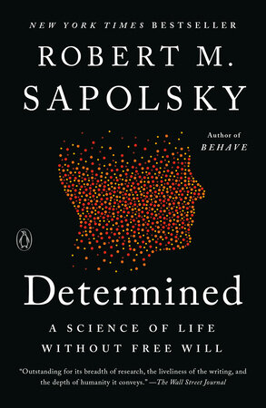

56:36 · 5 OPERE
È ancora possibile attribuire credibilità al mondo occidentale?
Il filo del discorso
Il punto di partenza è una intervista di Maria Zakharova, portavoce del ministero degli Esteri russo, ascoltata da Dr Divago. Il relatore ne riprende la domanda sulla credibilità dei paesi occidentali e la trasforma in una critica della loro vita pubblica. Il discorso di Solženicyn a Harvard del 1978 introduce il ruolo di una cultura capace di contraddire il proprio ambiente.
Leggi la sintesi completaRiduci la sintesi
Il tema centrale diventa però una condizione preliminare: per discutere occorre poter attribuire alle parole un significato condiviso, invece di usarle soltanto come segnali di appartenenza. Dr Divago sostiene che anche una opposizione possa restare dipendente dai temi scelti dai mezzi che contesta. La metafora delle navi che gettano cibo fuori bordo descrive questa subordinazione della agenda. La questione delle armi negli Stati Uniti, le dichiarazioni dei pontefici sulla guerra e una audizione del generale Cavoli sono esempi con cui il relatore chiede di confrontare fonti e contesti. Le sue conclusioni sulla manipolazione, sulle responsabilità politiche e sulle statistiche non sono però dimostrate dalla sola successione di questi esempi. Una lunga parte centrale riguarda la educazione. Il richiamo polemico a un libro sul libero arbitrio è seguito dalla distinzione fra progresso tecnico e sviluppo umano. La domanda rivolta ad Adamo nella Genesi diventa una immagine della posizione di ciascuno nel proprio percorso. Il ricordo della prima lettura di Einstein e la metafora delle spalle dei giganti valorizzano libri e biblioteche come occasioni per oltrepassare i propri limiti. Imparare, secondo Dr Divago, significa anche riconoscere quanto non si sa. Di fronte a un testo o a un quadro, il compito di chi insegna sarebbe allora aprire una domanda e costruire insieme un percorso, invece di consegnare il giudizio già pronto. La parte finale applica questa critica al mondo amministrato, alle restrizioni della circolazione, agli strumenti digitali e alla comunicazione delle alluvioni in Romagna. Il relatore vede un disegno unitario di controllo, ma gli accostamenti non documentano da soli un coordinamento fra misure diverse. Anche il giudizio sui processi di Norimberga è una sua valutazione, da distinguere dalla loro storia e dai successivi procedimenti. L’algebra degli scacchi ritorna nella idea che il denaro possa servire obiettivi di potere. Il congedo insiste infine sulla omissione: una notizia può contenere elementi veri e tuttavia orientare il pubblico se nasconde un contesto rilevante. La possibilità di ricostruire quel contesto è presentata come una forma della autonomia del cittadino.
I libri nel discorso

A World Split Apart (Discorso di Harvard)
Note sul riferimento
Copertina: Harper & Row · edizione bilingue russo e inglese · 1978
Immagine autentica dell’opera, controllata visivamente; l’edizione di riferimento non è attribuita al filmato.
Solženicyn e il discorso di Harvard sono espliciti; opera già presente, commencement8giugno 1978.

1984
Identificazione probabile
Note sul riferimento
Copertina: Newton Compton · edizione illustrativa
Orwell e lo slogan guerra è pace: collegamento probabile al romanzo 1984, titolo non annunciato.

Determined
Identificazione probabile
Note sul riferimento
Copertina: Penguin Books, edizione tascabile, 2024
Copertina di Determined: A Science of Life without Free Will, edizione Penguin Books. Edizione scelta come riferimento iconografico; nessuna edizione è confermata nel video. L’identificazione dell’opera nel video resta probabile.
Neurobiologo di Stanford, libro 2023 e negazione del libero arbitrio: probabile Determined, senza nome e titolo pronunciati.

Genesi
Note sul riferimento
Copertina: Einaudi, I libri della Bibbia / Einaudi Tascabili, 2000; introduzione di Steven Rose
Copertina dell’edizione autonoma Genesi, nella serie I libri della Bibbia, con introduzione di Steven Rose. Edizione scelta come riferimento iconografico; nessuna edizione è confermata nel video.
Il libro della Genesi e la domanda rivolta a Adamo sono espliciti, Genesi3:9.

L’algebra degli scacchi
Note sul riferimento
Copertina: Zambon, 2008
L’algebra degli scacchi è nominato dal proprio autore nel passaggio sul denaro e il potere.